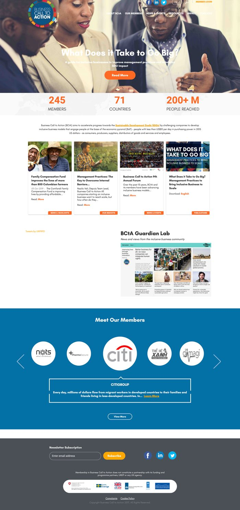
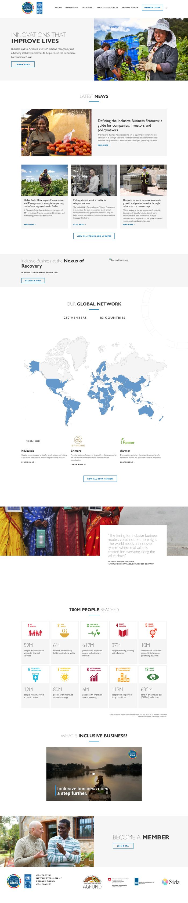
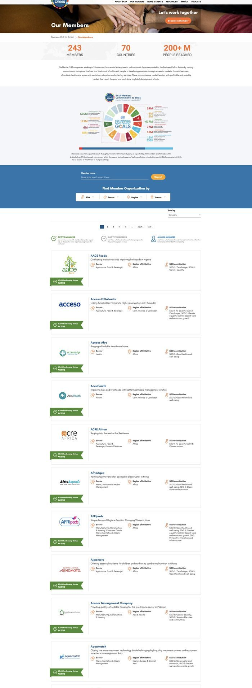
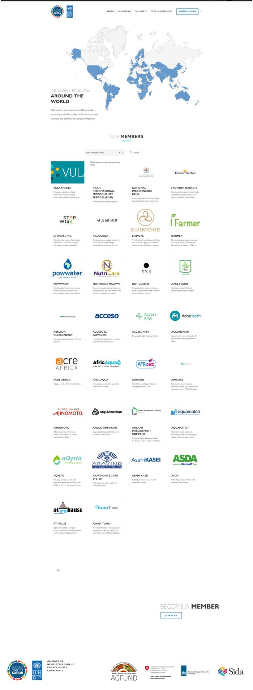

Case Study · UNDP Business Call to Action
Leading the design, development, and rebrand of the Business Call to Action website — turning a dated, static site into a searchable, story-led platform for a network of 280+ companies working across 83 countries.
By 2020, BCtA's website had grown well past what its original 2015 microsite was built for. The goal of the relaunch was simple: turn it into an easily navigable, modern website that could serve a growing global network.




Broke one long, multi-topic scroll into distinct, single-purpose sections — mission, inclusive business, team, partners — each scannable in seconds instead of requiring a full read-through.
Cut from six top-level items to four, matching how users actually moved through the site rather than how the org chart was structured. Toolkits and Impact — tools mainly used by logged-in members — were consolidated behind a single sign-on under Member Login, clearing them off the public nav entirely.
Retired stock imagery for real member and field photography, introduced a co-branded UNDP lockup, and established a new visual identity across the site with a new brand book and tone-of-voice guide.
Extended the new identity across BCtA's social channels with a matching template system, so the website and social presence read as one brand for the first time.
Paired an interactive map — hover any country to see the members operating there — with a filterable finder searchable by SDG, sector, region, and status across 280+ companies. A real gain in findability, though the resulting paginated list was a known area we'd have liked to modernize further.
Integrated the Sustainable Development Goals directly into impact reporting, so each member's contribution rolls up into a specific, SDG-aligned figure — turning company-level reporting into a credible story for funders and partners.
Migrated years of news, member profiles, and resources from the legacy CMS without losing SEO equity or breaking inbound links.
The new design system was built to be reused, not just admired. When BCtA launched the Inclusive Innovation Journey program, I designed its page using the templates from the relaunch — proof the new system could support new initiatives without starting from scratch each time.